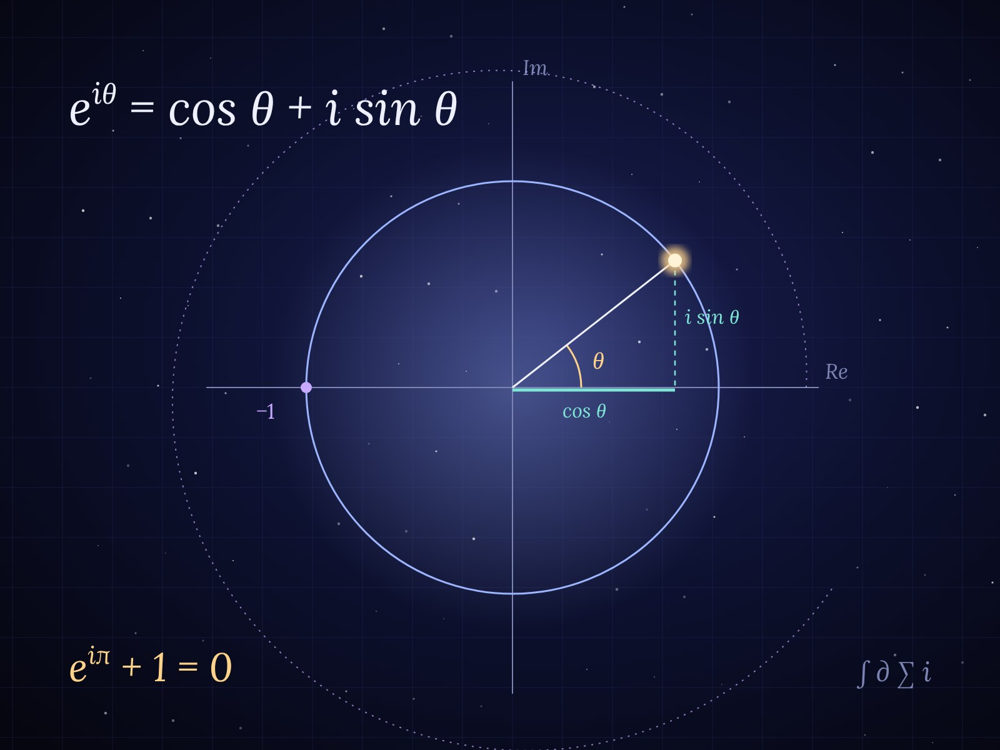

{{t.back}}
中文
EN
{{t.tag}}
{{t.status}}
{{t.title}}
MATH JOURNAL
{{t.lead}}

{{m.k}}
{{m.v}}
01 · {{t.k1}}
{{t.h1}}
{{t.p1}}
{{tp.k}}
{{tp.st}}
{{tp.name}}
{{tp.f}}
{{tp.d}}
{{t.whereK}}
{{tp.w}}
02 · {{t.kL}}
{{t.hL}}
{{t.pL}}
{{lv.k}}
{{it.a}}
{{it.b}}
03 · {{t.k2}}
{{t.h2}}
{{t.p2}}
{{lg.date}}
{{lg.topic}}
{{lg.title}}
{{rw.k}}
{{rw.v}}
04 · {{t.k3}}
{{t.h3}}
{{t.favWhy}}
e
iπ
+ 1 = 0
{{t.favCap}}
05 · {{t.k4}}
{{t.h4}}
{{b.k}}
{{b.t}}
{{b.a}}
REFLECTION
{{rf.title}}
{{rf.lead}}
{{r.icon}}
{{r.k}}
{{r.q}}
{{r.v}}
{{t.nextK}}
{{t.nextV}}
→